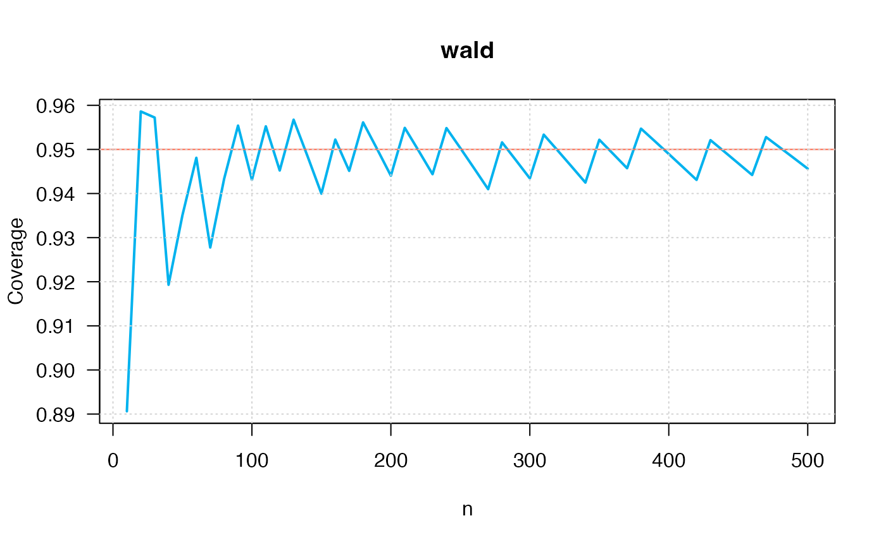
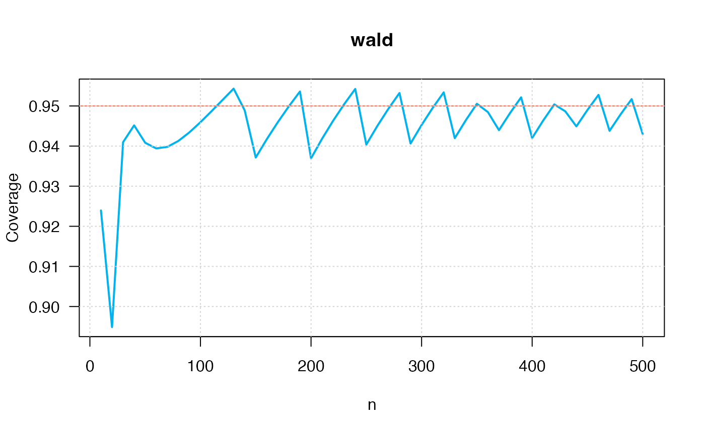
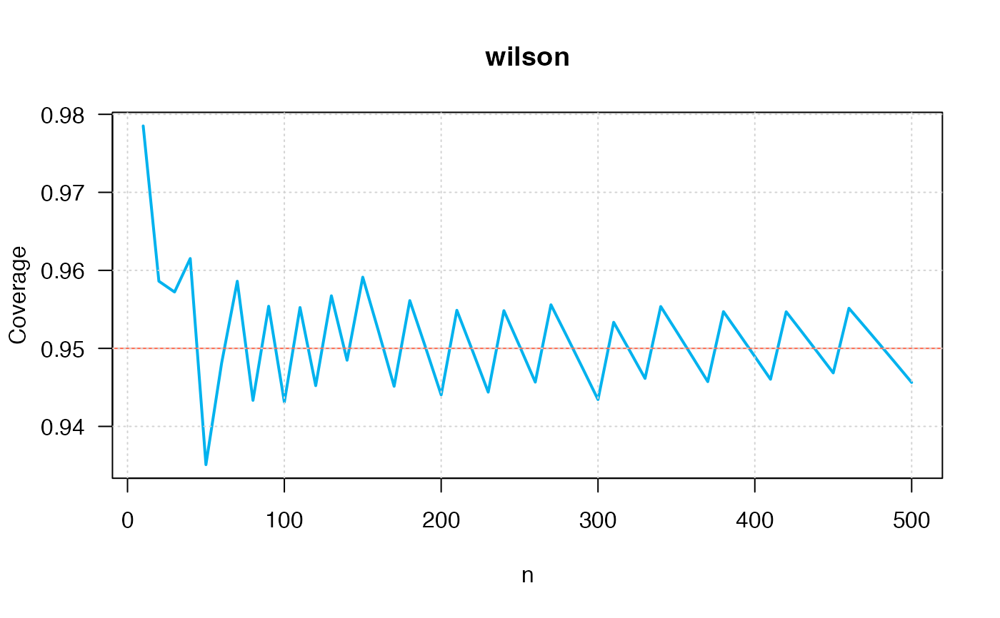
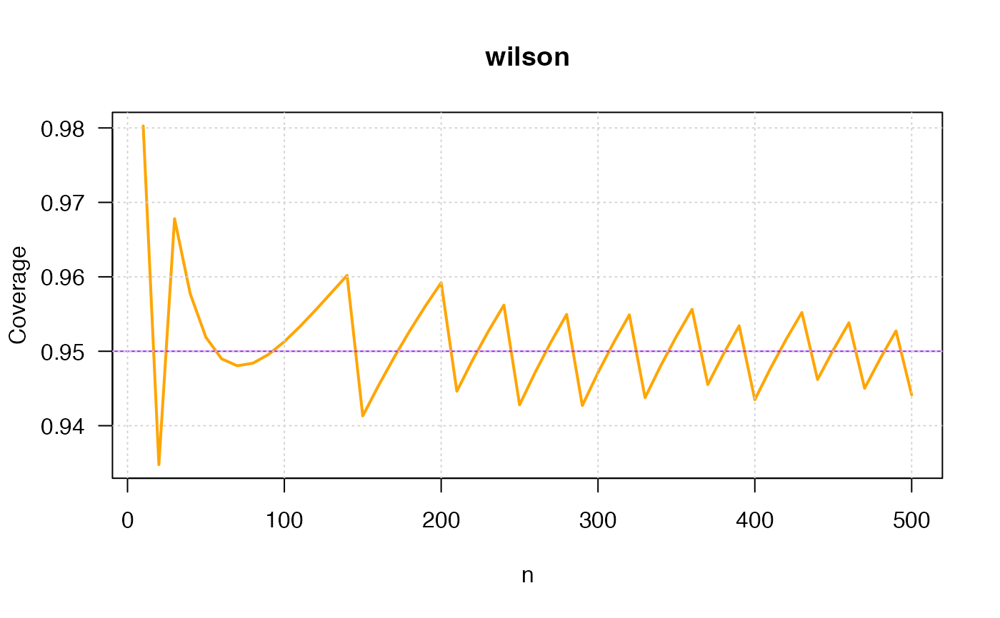

R/ci_p_coverage.R
ci_p_coverage_plot2.RdThis function plots the coverage for any confidence interval for p.
ci_p_coverage_plot2(
p = 0.5,
seq_n = seq(from = 10, to = 500, by = 10),
conf.level = 0.95,
intervalType = "wald",
plot = TRUE,
col = "deepskyblue2",
linecolor = "tomato",
...
)true proportion \(p\).
sequence with the values of sample size \(n\). By default is the sequence 10, 20, 30, ..., 480, 490, 500.
nominal confidence level for the returned confidence interval. By default is 0.95.
type of confidence interval, possible choices are listed in ci_p.
logical value to obtain the plot, TRUE by default.
color for the coverage curve.
color for the line representing the conf.level.
further arguments and graphical parameters passed to plot function.
A dataframe with Method, n, p and true coverage and the plot.
This function was inspired by the binomTestCoveragePlot() function from conf package and Park & Leemis (2019).
Park, H., & Leemis, L. M. (2019). Ensemble confidence intervals for binomial proportions. Statistics in Medicine, 38(18), 3460-3475.
ci_p.
ci_p_coverage_plot2(p=0.50,
conf.level=0.95,
intervalType="wald")

#> intervalType n p coverage
#> 1 ci_p_wald 10 0.5 0.890625
#> 2 ci_p_wald 20 0.5 0.9586105
#> 3 ci_p_wald 30 0.5 0.9572261
#> 4 ci_p_wald 40 0.5 0.9193095
#> 5 ci_p_wald 50 0.5 0.9350914
#> 6 ci_p_wald 60 0.5 0.9481061
#> 7 ci_p_wald 70 0.5 0.9277621
#> 8 ci_p_wald 80 0.5 0.9433356
#> 9 ci_p_wald 90 0.5 0.9554025
#> 10 ci_p_wald 100 0.5 0.9431121
#> 11 ci_p_wald 110 0.5 0.9552379
#> 12 ci_p_wald 120 0.5 0.9452202
#> 13 ci_p_wald 130 0.5 0.9567449
#> 14 ci_p_wald 140 0.5 0.9484764
#> 15 ci_p_wald 150 0.5 0.9399728
#> 16 ci_p_wald 160 0.5 0.952233
#> 17 ci_p_wald 170 0.5 0.9451348
#> 18 ci_p_wald 180 0.5 0.956129
#> 19 ci_p_wald 190 0.5 0.9501486
#> 20 ci_p_wald 200 0.5 0.9440343
#> 21 ci_p_wald 210 0.5 0.9548859
#> 22 ci_p_wald 220 0.5 0.9496854
#> 23 ci_p_wald 230 0.5 0.9443864
#> 24 ci_p_wald 240 0.5 0.9548376
#> 25 ci_p_wald 250 0.5 0.9502932
#> 26 ci_p_wald 260 0.5 0.9456712
#> 27 ci_p_wald 270 0.5 0.9409868
#> 28 ci_p_wald 280 0.5 0.9515989
#> 29 ci_p_wald 290 0.5 0.9475432
#> 30 ci_p_wald 300 0.5 0.9434343
#> 31 ci_p_wald 310 0.5 0.9533484
#> 32 ci_p_wald 320 0.5 0.9497706
#> 33 ci_p_wald 330 0.5 0.9461461
#> 34 ci_p_wald 340 0.5 0.9424823
#> 35 ci_p_wald 350 0.5 0.9521962
#> 36 ci_p_wald 360 0.5 0.9489834
#> 37 ci_p_wald 370 0.5 0.9457345
#> 38 ci_p_wald 380 0.5 0.954713
#> 39 ci_p_wald 390 0.5 0.951853
#> 40 ci_p_wald 400 0.5 0.9489598
#> 41 ci_p_wald 410 0.5 0.9460373
#> 42 ci_p_wald 420 0.5 0.9430894
#> 43 ci_p_wald 430 0.5 0.9521066
#> 44 ci_p_wald 440 0.5 0.949493
#> 45 ci_p_wald 450 0.5 0.9468549
#> 46 ci_p_wald 460 0.5 0.9441951
#> 47 ci_p_wald 470 0.5 0.9527972
#> 48 ci_p_wald 480 0.5 0.9504289
#> 49 ci_p_wald 490 0.5 0.9480394
#> 50 ci_p_wald 500 0.5 0.945631
ci_p_coverage_plot2(p=0.75,
conf.level=0.95,
intervalType="wald")

#> intervalType n p coverage
#> 1 ci_p_wald 10 0.75 0.9239588
#> 2 ci_p_wald 20 0.75 0.8948752
#> 3 ci_p_wald 30 0.75 0.940957
#> 4 ci_p_wald 40 0.75 0.9451647
#> 5 ci_p_wald 50 0.75 0.9408265
#> 6 ci_p_wald 60 0.75 0.9394162
#> 7 ci_p_wald 70 0.75 0.9397955
#> 8 ci_p_wald 80 0.75 0.9412736
#> 9 ci_p_wald 90 0.75 0.943417
#> 10 ci_p_wald 100 0.75 0.945947
#> 11 ci_p_wald 110 0.75 0.9486811
#> 12 ci_p_wald 120 0.75 0.9514984
#> 13 ci_p_wald 130 0.75 0.9543188
#> 14 ci_p_wald 140 0.75 0.9489014
#> 15 ci_p_wald 150 0.75 0.9371451
#> 16 ci_p_wald 160 0.75 0.9417141
#> 17 ci_p_wald 170 0.75 0.9459686
#> 18 ci_p_wald 180 0.75 0.9499239
#> 19 ci_p_wald 190 0.75 0.9535965
#> 20 ci_p_wald 200 0.75 0.9369437
#> 21 ci_p_wald 210 0.75 0.9418286
#> 22 ci_p_wald 220 0.75 0.9463171
#> 23 ci_p_wald 230 0.75 0.9504435
#> 24 ci_p_wald 240 0.75 0.9542386
#> 25 ci_p_wald 250 0.75 0.9403776
#> 26 ci_p_wald 260 0.75 0.9450333
#> 27 ci_p_wald 270 0.75 0.9493047
#> 28 ci_p_wald 280 0.75 0.9532263
#> 29 ci_p_wald 290 0.75 0.9406335
#> 30 ci_p_wald 300 0.75 0.945252
#> 31 ci_p_wald 310 0.75 0.9494919
#> 32 ci_p_wald 320 0.75 0.9533865
#> 33 ci_p_wald 330 0.75 0.9419665
#> 34 ci_p_wald 340 0.75 0.9464353
#> 35 ci_p_wald 350 0.75 0.9505436
#> 36 ci_p_wald 360 0.75 0.9484632
#> 37 ci_p_wald 370 0.75 0.943968
#> 38 ci_p_wald 380 0.75 0.948227
#> 39 ci_p_wald 390 0.75 0.9521493
#> 40 ci_p_wald 400 0.75 0.9420098
#> 41 ci_p_wald 410 0.75 0.9463688
#> 42 ci_p_wald 420 0.75 0.9503889
#> 43 ci_p_wald 430 0.75 0.9486533
#> 44 ci_p_wald 440 0.75 0.9449082
#> 45 ci_p_wald 450 0.75 0.9489893
#> 46 ci_p_wald 460 0.75 0.9527597
#> 47 ci_p_wald 470 0.75 0.9437917
#> 48 ci_p_wald 480 0.75 0.9479041
#> 49 ci_p_wald 490 0.75 0.9517089
#> 50 ci_p_wald 500 0.75 0.9429725
ci_p_coverage_plot2(p=0.50,
conf.level=0.95,
intervalType="wilson")

#> intervalType n p coverage
#> 1 ci_p_wilson 10 0.5 0.9785156
#> 2 ci_p_wilson 20 0.5 0.9586105
#> 3 ci_p_wilson 30 0.5 0.9572261
#> 4 ci_p_wilson 40 0.5 0.9615227
#> 5 ci_p_wilson 50 0.5 0.9350914
#> 6 ci_p_wilson 60 0.5 0.9481061
#> 7 ci_p_wilson 70 0.5 0.9586086
#> 8 ci_p_wilson 80 0.5 0.9433356
#> 9 ci_p_wilson 90 0.5 0.9554025
#> 10 ci_p_wilson 100 0.5 0.9431121
#> 11 ci_p_wilson 110 0.5 0.9552379
#> 12 ci_p_wilson 120 0.5 0.9452202
#> 13 ci_p_wilson 130 0.5 0.9567449
#> 14 ci_p_wilson 140 0.5 0.9484764
#> 15 ci_p_wilson 150 0.5 0.9591315
#> 16 ci_p_wilson 160 0.5 0.952233
#> 17 ci_p_wilson 170 0.5 0.9451348
#> 18 ci_p_wilson 180 0.5 0.956129
#> 19 ci_p_wilson 190 0.5 0.9501486
#> 20 ci_p_wilson 200 0.5 0.9440343
#> 21 ci_p_wilson 210 0.5 0.9548859
#> 22 ci_p_wilson 220 0.5 0.9496854
#> 23 ci_p_wilson 230 0.5 0.9443864
#> 24 ci_p_wilson 240 0.5 0.9548376
#> 25 ci_p_wilson 250 0.5 0.9502932
#> 26 ci_p_wilson 260 0.5 0.9456712
#> 27 ci_p_wilson 270 0.5 0.9555904
#> 28 ci_p_wilson 280 0.5 0.9515989
#> 29 ci_p_wilson 290 0.5 0.9475432
#> 30 ci_p_wilson 300 0.5 0.9434343
#> 31 ci_p_wilson 310 0.5 0.9533484
#> 32 ci_p_wilson 320 0.5 0.9497706
#> 33 ci_p_wilson 330 0.5 0.9461461
#> 34 ci_p_wilson 340 0.5 0.9553674
#> 35 ci_p_wilson 350 0.5 0.9521962
#> 36 ci_p_wilson 360 0.5 0.9489834
#> 37 ci_p_wilson 370 0.5 0.9457345
#> 38 ci_p_wilson 380 0.5 0.954713
#> 39 ci_p_wilson 390 0.5 0.951853
#> 40 ci_p_wilson 400 0.5 0.9489598
#> 41 ci_p_wilson 410 0.5 0.9460373
#> 42 ci_p_wilson 420 0.5 0.9546927
#> 43 ci_p_wilson 430 0.5 0.9521066
#> 44 ci_p_wilson 440 0.5 0.949493
#> 45 ci_p_wilson 450 0.5 0.9468549
#> 46 ci_p_wilson 460 0.5 0.9551421
#> 47 ci_p_wilson 470 0.5 0.9527972
#> 48 ci_p_wilson 480 0.5 0.9504289
#> 49 ci_p_wilson 490 0.5 0.9480394
#> 50 ci_p_wilson 500 0.5 0.945631
ci_p_coverage_plot2(p=0.75,
conf.level=0.95,
intervalType="wilson",
col="orange", linecolor="purple")

#> intervalType n p coverage
#> 1 ci_p_wilson 10 0.75 0.9802723
#> 2 ci_p_wilson 20 0.75 0.9347622
#> 3 ci_p_wilson 30 0.75 0.9678105
#> 4 ci_p_wilson 40 0.75 0.9577129
#> 5 ci_p_wilson 50 0.75 0.951876
#> 6 ci_p_wilson 60 0.75 0.9489842
#> 7 ci_p_wilson 70 0.75 0.948049
#> 8 ci_p_wilson 80 0.75 0.948398
#> 9 ci_p_wilson 90 0.75 0.949581
#> 10 ci_p_wilson 100 0.75 0.9512948
#> 11 ci_p_wilson 110 0.75 0.9533335
#> 12 ci_p_wilson 120 0.75 0.9555561
#> 13 ci_p_wilson 130 0.75 0.9578659
#> 14 ci_p_wilson 140 0.75 0.9601959
#> 15 ci_p_wilson 150 0.75 0.9413114
#> 16 ci_p_wilson 160 0.75 0.9453706
#> 17 ci_p_wilson 170 0.75 0.949184
#> 18 ci_p_wilson 180 0.75 0.952756
#> 19 ci_p_wilson 190 0.75 0.9560945
#> 20 ci_p_wilson 200 0.75 0.9592093
#> 21 ci_p_wilson 210 0.75 0.9446319
#> 22 ci_p_wilson 220 0.75 0.948805
#> 23 ci_p_wilson 230 0.75 0.9526529
#> 24 ci_p_wilson 240 0.75 0.9562017
#> 25 ci_p_wilson 250 0.75 0.9427956
#> 26 ci_p_wilson 260 0.75 0.9471934
#> 27 ci_p_wilson 270 0.75 0.9512348
#> 28 ci_p_wilson 280 0.75 0.9549508
#> 29 ci_p_wilson 290 0.75 0.9427161
#> 30 ci_p_wilson 300 0.75 0.9471225
#> 31 ci_p_wilson 310 0.75 0.9511715
#> 32 ci_p_wilson 320 0.75 0.9548943
#> 33 ci_p_wilson 330 0.75 0.9437634
#> 34 ci_p_wilson 340 0.75 0.9480561
#> 35 ci_p_wilson 350 0.75 0.9520049
#> 36 ci_p_wilson 360 0.75 0.9556394
#> 37 ci_p_wilson 370 0.75 0.9455228
#> 38 ci_p_wilson 380 0.75 0.9496342
#> 39 ci_p_wilson 390 0.75 0.9534221
#> 40 ci_p_wilson 400 0.75 0.9434955
#> 41 ci_p_wilson 410 0.75 0.9477182
#> 42 ci_p_wilson 420 0.75 0.9516135
#> 43 ci_p_wilson 430 0.75 0.9552082
#> 44 ci_p_wilson 440 0.75 0.9461985
#> 45 ci_p_wilson 450 0.75 0.9501639
#> 46 ci_p_wilson 460 0.75 0.953828
#> 47 ci_p_wilson 470 0.75 0.9450232
#> 48 ci_p_wilson 480 0.75 0.9490282
#> 49 ci_p_wilson 490 0.75 0.952734
#> 50 ci_p_wilson 500 0.75 0.9441463